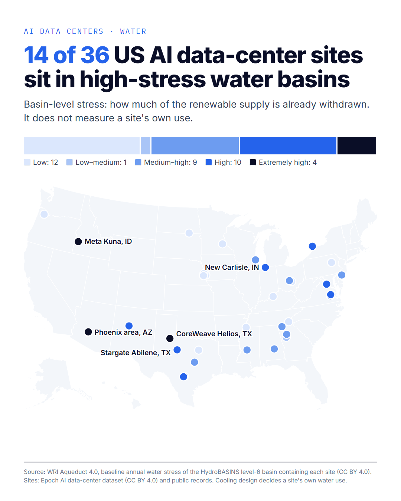
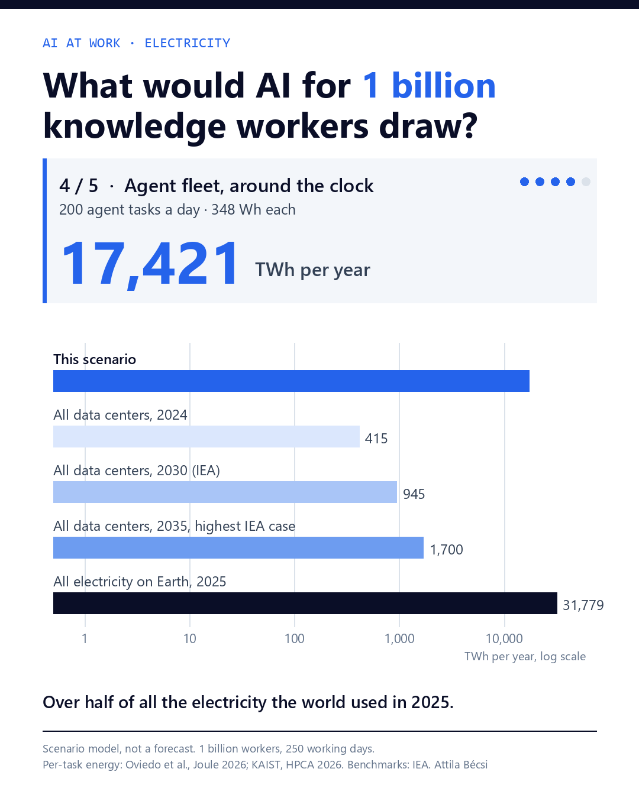

I study industrial and AI infrastructure from the outside: satellite imagery, night lights, ship tracking, permits and public filings. Every number in these studies traces to a public source listed in its appendix.

Five flagship US AI campuses, tracked through permits, construction data, satellite imagery and NASA night lights.

An interactive model of the electricity, machines and equipment it would take to give every knowledge worker an AI co-worker.
I'm Attila Bécsi. I work on measuring physical economic activity with open data, and on being honest about what that data can and cannot show. Each study states its limits next to its findings.
New studies arrive by email: subscribe on Substack. Questions, corrections or data I should look at: find me on GitHub.